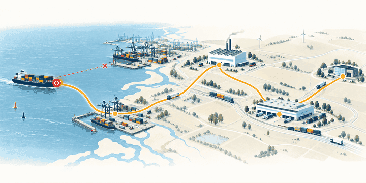

See the impact
Stock cover, customer commitments and downstream exposure.
European application · European data residency
One authority model and one decision record for every consequential supply-chain decision, whoever or whatever takes it: your people, your own algorithms, your vendors' agents and ours. From the first signal through execution and the outcome.

A connected decision
A delayed shipment becomes a controlled recovery decision. People, evidence and permissions stay connected.
Stock cover, customer commitments and downstream exposure.
The proposed action, its cost and the responsible approver.
The approved instruction, execution response and outcome.
Every orange point is a decision: a planner books the reroute, your planning system moves stock, a carrier's agent changes the booking. Aidecis applies one set of rules to all three and keeps one record.
What Aidecis is
Agent vendors now ship their own audit trail and override controls, each for their own agents. Aidecis is the layer across all of them: one set of rules for who may decide what, and one record of every decision, linked to its outcome.
Aidecis does not replace SAP, access control or AI model governance. It decides who and what may take each consequential decision, within which limits, before it runs: for your people, your own algorithms and every vendor's agents. Each decision then has one record, linked to its outcome, whichever system it ran in.
People, bots or both
Your company already runs software that decides: MRP runs that create orders, replenishment rules that move stock, planning tools that change schedules, and now AI agents. Aidecis brings your people, your existing bots and our agents into one visible decision chain, governs each of them with the same authority and evidence, and tells you when a decision should change hands.
In the market's terms: most supply-chain domains run at autonomy level 1 to 2 today and are expected to reach 3.5 or more within five years (WEF and Accenture, 2026). Aidecis moves each decision up that scale, or back down, one decision type and site at a time, on evidence.
A person with the right authority decides. Agents can prepare the evidence and the options.
Human-to-agent · autonomy level 1, assisted
A bot proposes and a person approves, or the bot decides within a set limit and a person decides above it.
Agent-to-human · autonomy level 2, co-adaptive
The bot decides and acts, only for reversible actions within limits you approve, with monitoring and a way to stop.
Bounded agent-to-human · autonomy level 3, self-directing, for one decision type and site
How far a decision can move up the scale depends on your maturity in that decision family: basic, digital, advanced or leading. For basic or digital organisations we propose reviewed assistance and bounded pilots, not bot mode. Agent-to-agent chains (autonomy level 3 to 4) are not offered at launch.
Each bot is registered with its owner, its role in the chain, its limits and its version. It keeps its own logic; Aidecis governs what it may do.
A new algorithm version, a higher limit or a step that moves from a person to a bot is approved, dated and visible in the chain.
When a decision has become stable, Aidecis shows the evidence that it can move from people to a bot. When a bot drifts, it advises moving the decision back to people.
Two levels of control
Not every actor will act through Aidecis. A vendor's agent or your own MRP run often writes straight into the ERP, TMS or WMS with its own credentials. Aidecis covers both cases, and every decision record shows which level applied.
The action runs only through the Aidecis gateway, with a single-use grant that matches what was approved. Without the grant, nothing runs.
What it proves: the exact action was authorised before it ran
An agent or algorithm that writes in its own system is detected afterwards from that system's change records, matched against its registered role, limits and mode, and recorded. If it went outside them, it is flagged within minutes. Observed control never prevents an action; it shows it.
What it proves: what ran, by whom, against which role and limit, within minutes after the fact
You decide when an actor moves from observed to enforced, per decision type, for example for every write above a set amount.
The Aidecis decision lifecycle
Every consequential decision carries its business context, authority, evidence, approval path and operational memory.
A planner, operator or agent initiates a consequential action with its supply-chain purpose and context.
Authority, operating constraints and the applicable policy are checked before the action proceeds, or, for actors outside the gateway, against what they did.
Out-of-envelope decisions route to the accountable owner with the evidence needed to decide.
Through the gateway with a single-use grant, or, for actors that write in their own systems, recorded and reconciled after the fact.
The result stays connected to the decision. When a decision proves stable, Aidecis shows when it can move from people to a bot.
Supply chain is the starting point
In operations, a decision is rarely local. A rerouted shipment changes production cover. A schedule adjustment affects material availability. A supplier substitution touches quality and customer commitments.
Aidecis makes that impact explicit before execution, and reuses a proven decision at other plants, warehouses, lanes and regions.
Explore the platformDelay notice → inventory cover → authority check → regional approval → controlled re-route → service outcome.
Quality and safety envelope → plant authority → approval where needed → tracked execution and yield outcome.
Specification, source approval and cost thresholds held together as one accountable decision.
One product, two operating environments
Aidecis manages policies and decision logic in its European cloud. Each gateway runs inside your IT environment and requests a decision for the situation at hand. It carries out only actions permitted by policy and within the authority granted to the person or agent proposing them. If approval is required, the gateway waits until it is granted.
In the demo, the gateway runs against simulated systems.
Benefits
Try the product
Follow a cocoa delivery for the fictional De Boer BV: an AI agent spots the delay and proposes a fix, your rules decide who approves, and every step stays on record. Recorded from a real run of the product.
Prefer to click around yourself? Open the full demo
Opens in its own tab and works on your phone. Choose your view: planning, spend, or IT and risk.
Decision infrastructure for operations at scale
Aidecis turns operational data into decision workflows your teams can evaluate, govern and deploy across sites, regions and warehouses.
Prove a workflow against evidence. Put it into production with clear controls. Extend it across your network through certified configurations.
Subscription €45,000 per year, including the first site and two regions. Indicative, excluding taxes. Implementation is scoped to the workflows, integrations and operating footprint.
Start with a focused evidence sprint around one operational decision. Aidecis helps establish a baseline, evaluate the workflow against historical evidence, replay decisions and document the results.
You leave with a clear view of what the workflow can support, what needs to be addressed, and what a production rollout requires.
Pilot or evidence sprint: €16,000 to €24,000 (10 to 15 days).
Estimate the investment for your networkKeep decision logic, data and workflows in a shared registry, with a clear record of what is configured and approved.
Build evaluation sets, replay decisions and produce certification evidence before a workflow reaches production.
Deploy certified workflows across sites and regions while keeping local configurations within defined controls.
Give operational, technical and partner teams access without making user count the pricing meter.
Most pilots fail on the client side, not on the technology. At the assessment we check five conditions with you. A pilot without a named owner does not start.
We ask A go or no-go within 4 to 8 weeks of the assessment.
We offer A fixed-scope, fixed-price evidence sprint.
We ask A named executive owner, and a process owner for each decision type.
We offer Weekly progress in the decision record and the value record.
We ask A short pilot contract, a standard DPA and balanced IP terms.
We offer The pilot contract, DPA and subprocessor list, ready to sign.
We ask Agreement that the first slice is read-only and that shadow is a valid result.
We offer No write to any of your systems before the agreed gates are passed.
We ask Real cases and, if the pilot succeeds, a reference.
We offer Founding-client terms.
Every pilot is anchored in one decision type and one hard measure in your own terms: response time to a disruption, premium freight spend, stockout hours or price variance.
A vendor-trust pack for your procurement, security and risk teams is available on request: security, privacy and AI-governance documentation mapped to ISO/IEC 42001 and to your EU AI Act deployer duties, with our prices and an architecture walkthrough.
Every subscription carries a continuity package, so your governance does not depend on a young vendor.
Everything you own, in open formats, at any time and at the end of the contract.
An open-source ledger verifier, so you or your auditor can check an export without Aidecis.
Source code of the control kernel and the gateway, held by an escrow agent.
Agreed days at the published day rate to move your policies and records to the platform you choose.
Option: a dedicated control plane for your organisation.
Aidecis works with your team to scope the first workflow, measure it against a baseline, and plan its path into production. As the evidence and operating case grow, you can extend the platform to more workflows and locations.
European by design
European supply chains run across sites, languages, jurisdictions and highly specific local operating rules. Aidecis is designed around that reality: local authority is visible, policy reuse is governed, and an operating practice is never pushed enterprise-wide without the right conditions and acceptance.
Product design and deployment approach centred on European industrial operations.
European hosting and regional data residency are core deployment principles.
Policies can travel with evidence; local sites remain accountable for activation.